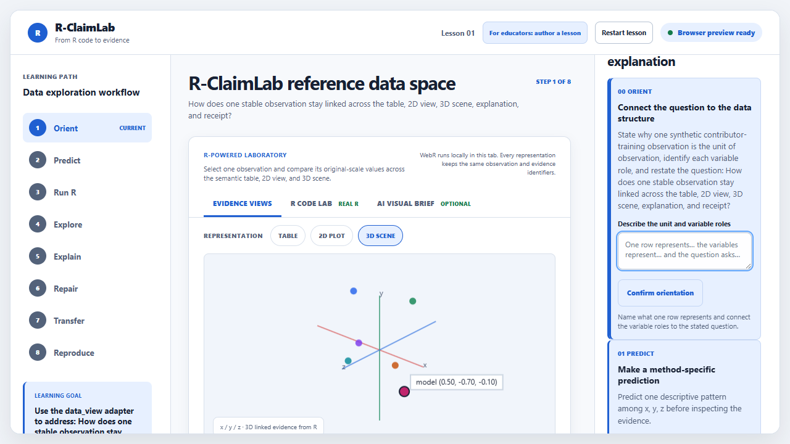

1
Orient and predict
Choose a goal and make an inspectable prediction before seeing the result.
Each step preserves the same evidence identifiers across R output, representations, explanation, and reproducibility checks.
Choose a goal and make an inspectable prediction before seeing the result.

Read, edit, and execute the method-specific analysis in the browser.

Confirm row counts, dimensions, identifiers, and the reproducible build receipt.

Cite a selected observation, axis, direction, and limitation in the claim.

Revise weak reasoning, apply it to changed data, and save a receipt.

Complete the same evidence task by keyboard and semantic table when 3D is unavailable.